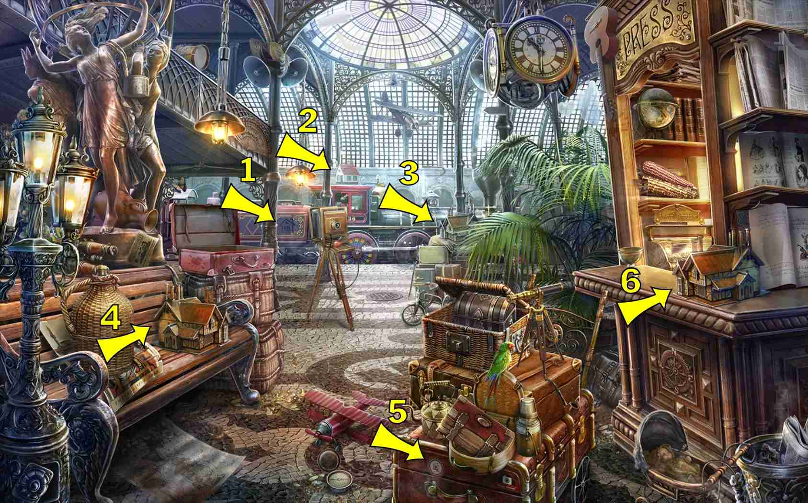
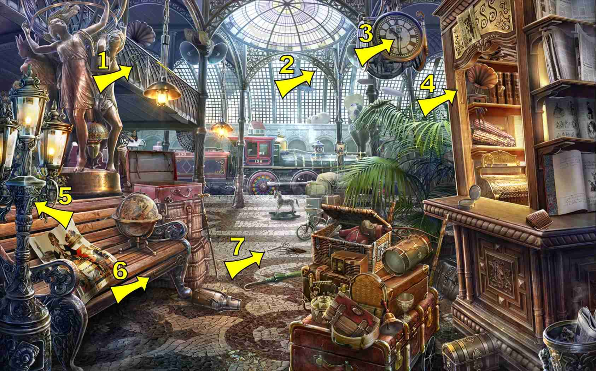
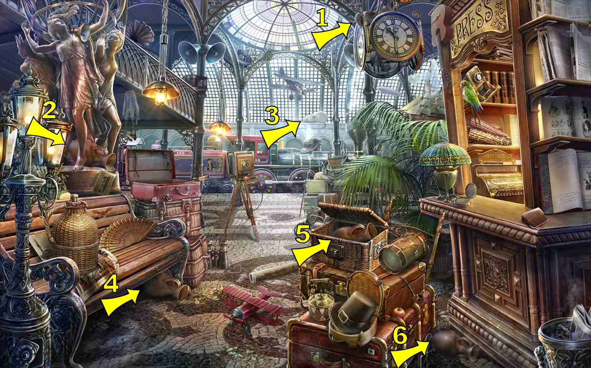

8 items:
On the green suitcase
On the four-sided clock
In the suitcase on the right side of the bench
3 items:
On the bench
In the basket on the cart in the foreground
3 items:
On the bench
At the top of the screen, right of the glass dome, above loudspeakers
On the counter to the right
7 items:
In the train wheels
Under the bench


2 items:
Left of the newsstand under the grand clock
Outside of the glass dome (as a shadow)

6 items:
In the press box, on the top shelf
2 items:
Behind the glass windows, running from the bottom of he balcony, arcing to the bottom of the glass dome. Difficult to see, but big enough for an easy click
6 items:
Leaning up against the bronze statue
6 items:
6 items:
On top of the map in the left foreground
4 items:
In the suitcase beyond the bench
On the counter of the press box
On the pile of luggage in the background by the train
8 items:
open, in the white most part of the dome arch on right side (white)